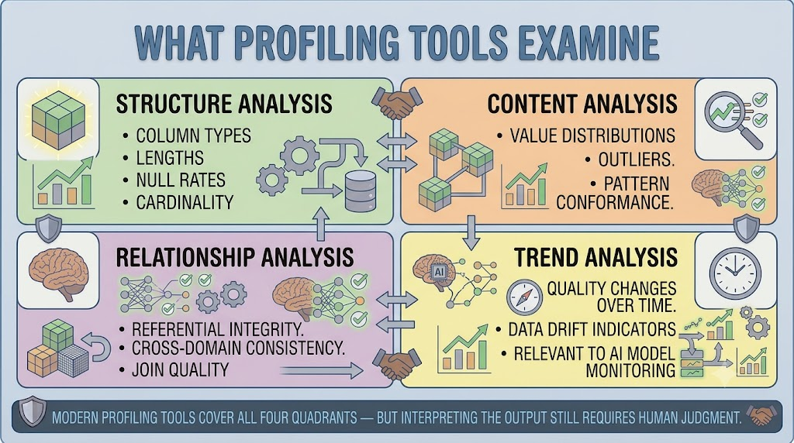
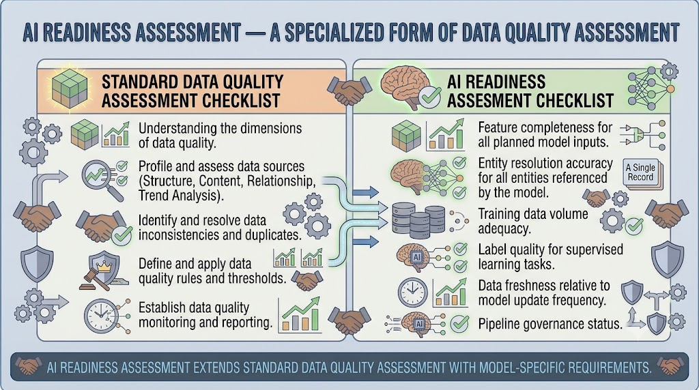
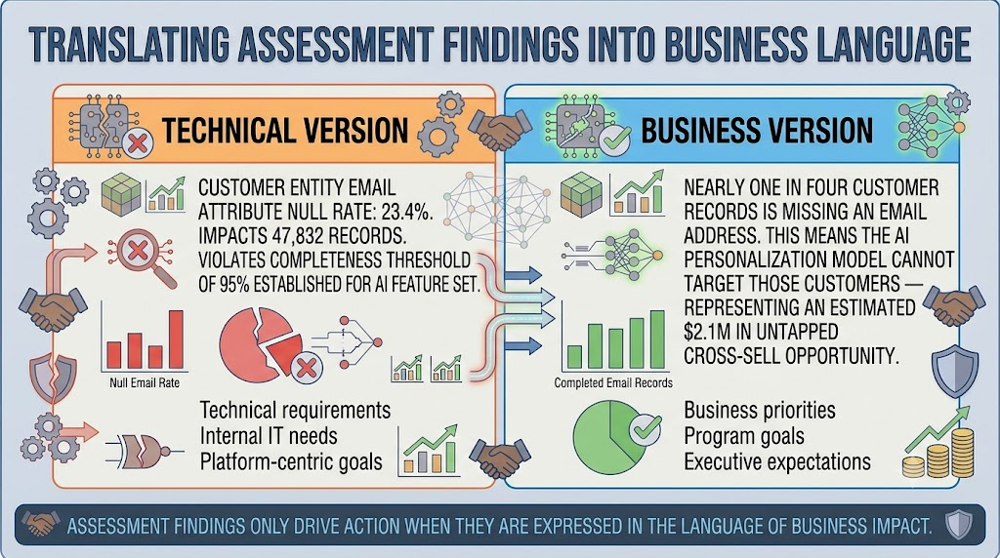
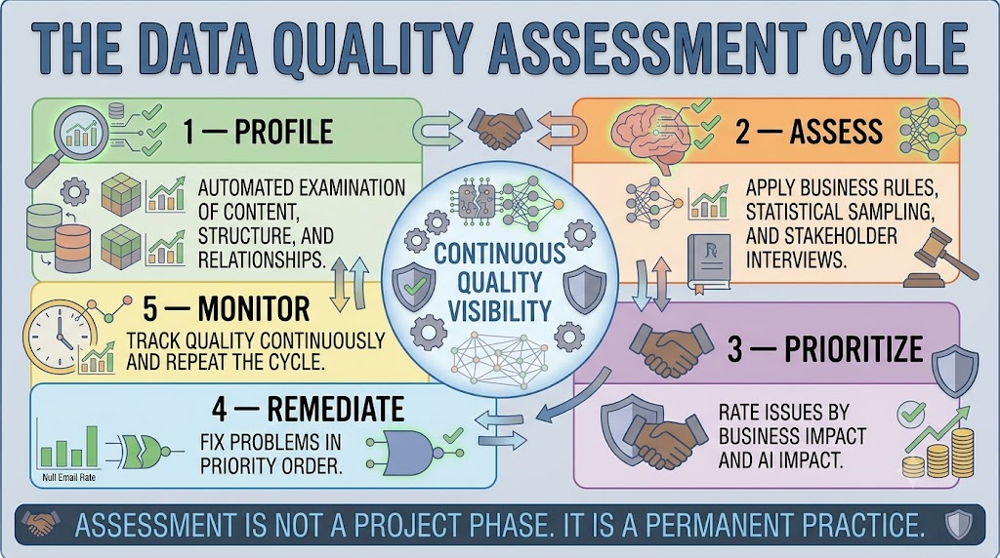

Profiling and Assessment Methods
Module support notes
Profiling Tools and What They Do
Data profiling tools have become significantly more capable in recent years, with many MDM platforms now including built-in profiling capabilities that automate the most time-consuming aspects of assessment. Modern tools examine four areas: structure (column types, null rates, cardinality), content (value distributions, outliers, pattern conformance), relationships (referential integrity, cross-domain consistency), and trends (quality changes over time, data drift indicators relevant to AI model monitoring).
However, profiling tools produce findings — they do not produce decisions. The output of a profiling run needs to be interpreted in business context: a high null rate on a field the business considers non-essential is a very different finding from a high null rate on a field that feeds a critical AI feature.
Warning
Organizations that invest in profiling tools without also investing in the human capacity to interpret and act on profiling output consistently underutilize their assessment capability. The tool surfaces what is there — it cannot tell you whether what it found matters to the business or to your AI program.

AI Readiness Assessment as a Formal Practice
AI readiness assessment is a specialized form of data quality assessment that applies model-specific requirements on top of the standard six-dimension framework. It asks not just whether data is complete, accurate, and consistent in general, but whether it meets the specific quality requirements of the AI system that will consume it.
Organizations that build AI readiness assessment into their standard MDM assessment practice avoid the costly and time-consuming rework that results from discovering model-specific data quality failures after development has begun.
- Feature completeness — does every planned model input have sufficient, populated data?
- Entity resolution accuracy — have all entities the model will reference been resolved to golden records?
- Training data volume — is there sufficient data for the model type and complexity?
- Label quality — for supervised learning tasks, are labels accurate and consistently applied?
- Data freshness — is data currency aligned with the model's update frequency requirements?
- Pipeline governance — are the pipelines delivering data to model training environments auditable?

Communicating Assessment Findings
The most technically rigorous data quality assessment will not drive remediation action if its findings are communicated in language that business leaders cannot connect to their priorities. Every significant finding should be translated into a business impact statement — what operational process does this problem affect, what business outcome does it put at risk, and what AI capability does it block or degrade.
This translation is not a presentation exercise — it is the analytical work that connects data quality findings to the business case for fixing them. Organizations that invest in this translation consistently see faster remediation progress because business stakeholders understand why the fixes matter.
Tip
For every technical finding, write the business version alongside it. Technical: "Customer email attribute null rate 23.4% — violates AI completeness threshold." Business: "Nearly one in four customer records is missing an email address, blocking the AI personalization model from targeting those customers." The second version is what gets the finding prioritized and funded.

Assessment is not a one-time project phase — it is a continuous cycle that keeps quality visible and actionable across the full life of the MDM program.
